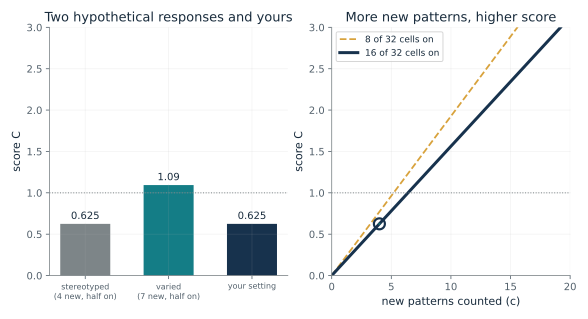
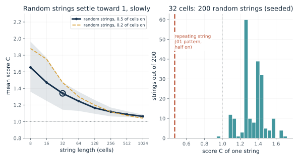
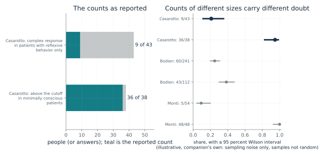
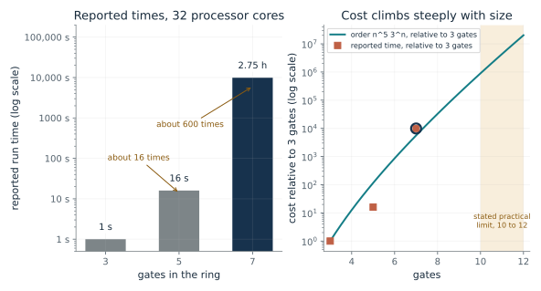
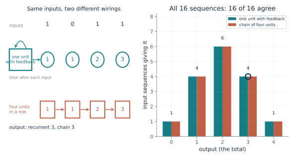
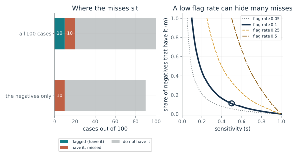
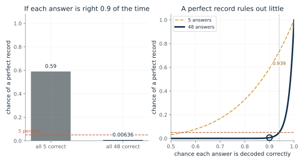

Ask what the signal is, what ties it to reports of experience in known cases, whether the tie transfers to the new case, and which rival explanations were tested. For a negative result, ask for the test's sensitivity before reading the silence. For a score, ask how its cutoff was chosen. For a machine, say that no test of experience has been validated against reports for any machine.
“A detector flags 10 of 100 cases and I think it catches about half the cases that have the property. How many cases did it miss, and what share of its negatives is that?”
Use mmi-ch32-question-experience with the companion's AI skill package. The illustrations below also work on their own.
How does a count of new patterns become a score?
From Chapter 32, Nine of 43 patients with only reflexive behavior gave complex responses to magnetic pulses
A response is a grid of 32 on-or-off entries. How do the count of new patterns and the mix of ones and zeros set its score?
Entropy measures how mixed the ones and zeros are. The count of new patterns says how much the response keeps changing, but a random string also produces many new patterns, so the count is divided by what a random string with the same mix would need. A repetitive response has few new patterns and scores low, and a varied one scores higher.
Predict first: Before moving anything, predict whether a 32-cell response with 7 new patterns and half its cells on scores above 1, and by roughly how much.

New patterns counted (c): 4 · Cells that are on, out of 32: 16
What happens: With half the cells on the entropy is 1 bit, and the score is 7 x 5 / 32 = 1.09, the chapter's 'about 1.1'. Four patterns at the same mix gives 0.625. Set on cells to 0 to see an undefined score.
With 4 new patterns and 16 of 32 cells on, the entropy is 1 bit and the score is 0.625. At this mix, a score of 1 would take 6.4 new patterns.
- Share of cells on
- 0.5
- Entropy H(p) (bits)
- 1
- Score C
- 0.625
- New patterns for a score of 1
- 6.4
A single number from a recording hides the counting rules behind it. Knowing the formula shows what moves the number and where it stops being defined.
The index is computed from EEG responses to magnetic pulses, with grid entries marked on or off for significant activity. The entries are not individual neurons, and the cutoff the chapter reports, 0.31, is an operational threshold, not a boundary found in nature.
The formula can be applied to any binary string, including a machine's activity. No such score has been validated against reports of experience for any machine, so the arithmetic carries no claim about one.
Show the calculation
p = 16/32 = 0.5, H(p) = 1 bit. C = c log2(n) / (n H(p)) = 4 x 5 / (32 x 1) = 0.625. The score is 1 when c = 32 x 1 / 5 = 6.4.
The equations and symbols
- p
- the share of cells that are on; it must lie strictly between 0 and 1 for the score
- H(p)
- entropy of one cell in bits; 1 bit at p = 1/2, and 0 when every cell is the same
- c
- the number of new patterns counted in the string
- n
- the length of the string; 32 here, so log2 n = 5
- C
- the score
Cells are binary, the string is long enough for the normalization to make sense (the chapter says short strings can score above 1), and p is strictly between 0 and 1. The score is an index of a recorded response, not a measure of experience.
Check your understanding: A response of 32 cells has 6 new patterns and 8 cells on. Find the entropy and the score.
Book source: Chapter 32, Nine of 43 patients with only reflexive behavior gave complex responses to magnetic pulses. Illustration C32-D01. Formula. Book formulas (the index of Casali and colleagues, as the chapter presents it). The two pattern counts, 4 and 7, are the chapter's hypothetical examples, not patient data and not counted from specified strings. The count c is typed in here; some combinations of c and p could not occur in a real 32-cell string.
Why divide by what a random string would need?
From Chapter 32, Nine of 43 patients with only reflexive behavior gave complex responses to magnetic pulses
How do real counts of new patterns behave for random strings of different lengths, and for a string that just repeats?
The Lempel-Ziv count grows with the length of the string even for pure noise, so a raw count could not tell structure from randomness. Dividing by the count a random string with the same mix would need gives noise a score near 1 and repetition a score below it. Short strings do not follow the large-string rule closely, so their scores overshoot.
Predict first: Predict whether random 32-cell strings average a score below 1, near 1 or above 1, and whether a string that repeats a fixed rhythm scores higher or lower than they do.

String length (cells): 32 · Chance a cell is on: 0.5
What happens: Random 32-cell strings average about 1.34, above 1, which fits the chapter's warning about short strings. The repeating string 0101... scores 0.469. At 1024 cells the random average has fallen only to about 1.06 while the repeating string scores 0.029.
At 32 cells with a chance 0.5 that a cell is on, 200 seeded random strings average a score of 1.34; the repeating string scores 0.469. Short random strings score above 1, and the average falls toward 1 only slowly as strings lengthen.
- Mean score, random strings
- 1.34
- Middle 80 percent of scores
- 1.14 to 1.47
- Score of a repeating string
- 0.469
- Share of random strings scoring above 1
- 0.995
A cutoff on a score means little if the score depends on string length. Knowing how the benchmark behaves for noise tells a reader what a high or low score does and does not rule out.
In the chapter's index, noise and muscle activity are meant to be kept from inflating the score by this normalization. This simulation uses random bits only; it is not a model of EEG.
A machine's binary activity can be scored the same way. The normalization behaves the same for any binary string, which says nothing about experience.
Show the calculation
Each string: c = Lempel-Ziv count of new patterns, p = its share of ones, C = c log2(32) / (32 x H(p)). Seeds are fixed by length and mix. The repeating string is 01 repeated to 32 cells.
The equations and symbols
- c_L
- the Lempel-Ziv count of new patterns, found by the exhaustive parse of the string
- n
- string length in cells
- p
- the string's share of cells that are on
- C
- the score; near 1 for a long random string
Strings are independent random bits with a fixed chance of a one, which is a toy stand-in for noise. Strings with no mix of ones and zeros are skipped (their score is undefined). The spread shown is the middle 80 percent of 200 seeded strings, not a confidence interval. At very short lengths the repeating string need not score lower: at 8 cells with a 0.2 chance of a one, it scores above the random average.
Check your understanding: In the left panel, does the mean score for 8-cell random strings sit above or below the mean for 1024-cell strings, at a mix of half the cells on?
Book source: Chapter 32, Nine of 43 patients with only reflexive behavior gave complex responses to magnetic pulses. Illustration C32-D02. Simulation. Simulation by the companion, with disclosed seeds, 200 random strings per setting. The chapter states that the normalization approaches 1 for long random strings and that short strings can score above 1; it does not give these simulated values. The count is the Lempel-Ziv 1976 exhaustive parse that the chapter's source note names. No patient data are used.
What do the reported counts say, and how much doubt do they carry?
From Chapter 32, Only 43 of 112 who followed commands at the bedside also responded on fMRI or EEG
How large are the shares behind the chapter's three reported studies, and how different are their sample sizes?
A share such as 9 of 43 is one sample of a possibly different true rate, and a different sample could have given a somewhat different share. The Wilson interval shows how far a share could move under simple sampling noise. Bigger groups give narrower intervals. The interval cannot correct for how people were chosen, how a diagnosis was made or what a test misses.
Predict first: Predict which of the six reported shares has the widest interval, before changing the study or the level.

Study: Casarotto and colleagues · Interval level: 0.95
What happens: The 5 of 54 and the 48 of 48 sit at opposite ends of the scale. The 48 of 48 is a share of 1, yet its 95 percent interval reaches down to about 0.93: a perfect record is not a proof of perfection.
Casarotto: 9/43 is a share of 0.209 with an interval of 0.114 to 0.352; Casarotto: 36/38 is 0.947, interval 0.827 to 0.985. The interval is the companion's own and covers sampling noise only, under an independence assumption these samples do not meet.
- Share, Casarotto: 9/43
- 0.209
- Interval, Casarotto: 9/43
- 0.114 to 0.352
- Share, Casarotto: 36/38
- 0.947
- Interval, Casarotto: 36/38
- 0.827 to 0.985
The chapter's argument depends on counts such as 9 of 43 and 60 of 241. Seeing how large the groups are shows how much weight a share can bear, and what the studies did not report.
Each share counts people whose recorded responses met a study's rule. A response is a pattern in a scan or EEG, not a report of experience, and the counts do not show what any person experienced.
No machine appears in these counts. The chapter says no test of experience has been validated against reports for any machine.
Show the calculation
Wilson interval at z = 1.96: centre (p + z^2/2n)/(1 + z^2/n), half-width z sqrt(p(1-p)/n + z^2/4n^2)/(1 + z^2/n). For 9 of 43: p = 0.209, interval 0.114 to 0.352. For 36 of 38: p = 0.947, interval 0.827 to 0.985.
The equations and symbols
- k, n
- the reported count and the group size
- p-hat
- the share k divided by n
- z
- 1.645, 1.96 or 2.576 for 90, 95 or 99 percent
The intervals treat each person or answer as an independent draw from one population with a fixed share. These samples were not random: Bodien's was a convenience sample, the 48 answers came from 16 volunteers, and the groups differ in diagnosis, centre and method. The interval therefore describes sampling noise under that assumption only.
Check your understanding: Which has the wider 95 percent interval, 9 of 43 or 60 of 241, and why?
Book source: Chapter 32, Only 43 of 112 who followed commands at the bedside also responded on fMRI or EEG. Illustration C32-D03. Reported result. Counts quoted from the chapter: Casarotto and colleagues (9 of 43 with a complex response; 36 of 38 minimally conscious patients above the 0.31 cutoff), Bodien and colleagues (60 of 241 and 43 of 112, a convenience sample of 353 adults), Monti and colleagues (5 of 54 who could modulate brain activity; 48 of 48 healthy answers decoded). The Wilson intervals are the companion's own, not reported by any study.
How fast does a theory's score become impossible to compute?
From Chapter 32, A theory's score took 2.75 hours for seven gates
Rings of simple gates took about 1 second, 16 seconds and 2.75 hours as they grew from 3 to 5 to 7 gates. What does that say about a system as large as a brain?
The score depends on trying many ways to cut the system into parts. The number of ways to cut, and the work to evaluate each, grows steeply with the number of nodes. The reported times show that growth for rings of 3, 5 and 7 gates, and the authors put the practical limit at about 10 to 12 nodes.
Predict first: Predict how many times longer 7 gates took than 5 gates, given that 5 gates took about 16 times as long as 3.

Gates in the ring: 7
What happens: Seven gates took about 2.75 hours, roughly 600 times the 16 seconds for five. The order formula gives only about 48 times for that step, so the two do not track each other step by step.
A ring of 7 gates took about 2.75 hours, 619 times the 5-gate time. The order formula n^5 3^n gives 48.4 times for the same step, so the formula and the timings differ step by step.
- Reported time
- 2.75 hours
- Times longer than the previous ring
- 619
- Order formula's growth over the previous ring
- 48.4
- Reported time in seconds
- 9900
A test of experience has to be checkable against known cases. A score that cannot be computed for a system of the relevant size cannot be checked there, although other predictions or proxies may still be tested.
The theory ties experience to integration, and the score asks how much a cut into two parts destroys. This is a theory's quantity computed on a toy system, not a measurement of anyone's experience.
The runs are of software on simple gates. The cost of the algorithm says nothing about whether a machine has experience.
Show the calculation
7 gates: 9900 s; 5 gates: 16 s; ratio 619. Formula ratio = (7/5)^5 x 3^(2) = 48.4.
The equations and symbols
- n
- the number of nodes (gates) in the system
- cost(n)
- the order of the algorithm's work, in relative units; it is not a number of seconds
Only three ring sizes were reported, on one benchmark family and one machine. An order formula drops constants and says nothing about which times to expect. The comparison of the formula with the timings is the companion's own.
Check your understanding: How many times longer did the 7-gate ring take than the 3-gate ring, using the reported times?
Book source: Chapter 32, A theory's score took 2.75 hours for seven gates. Illustration C32-D04. Reported result. The three run times are those reported for rings of stochastic majority gates on 32 processor cores. The order n^5 3^n and the practical limit of about 10 to 12 nodes are from the chapter's source note on the same paper, which says execution times were substantially variable. The formula gives relative cost only; the companion extrapolates no times.
Can two machines give the same answers and be wired differently?
From Chapter 32, Same outputs, different insides: what a matching machine does and does not show
A recurrent adder keeps a running total. An unrolled chain does the same with one unit per input. Do their outputs ever differ?
The recurrent unit feeds its output back into itself at each step, and the chain passes its total forward through separate units. Over a fixed four steps, each step of the loop corresponds to one unit of the chain, so the totals match at every step. The two differ only in how they are built, which behavior cannot show.
Predict first: For the sequence 1, 0, 1, 1, predict the output of each wiring, and whether any of the 16 sequences makes them differ.

Input sequence (binary number, first input is the leading bit): 11
What happens: Sequence 11 is the chapter's 1, 0, 1, 1. Both versions give 3, with totals 1, 1, 2, 3. Try any other sequence: the outputs never differ, though one design has one unit and a feedback wire and the other has four units in a row.
For inputs 1 0 1 1 the feedback unit's total runs 1, 1, 2, 3 and the chain gives the same, ending at 3. The two agree on all 16 of 16 sequences, yet one has a single unit and a feedback wire and the other has four units in a row.
- Inputs
- 1 0 1 1
- Output, one unit with feedback
- 3
- Output, chain of four
- 3
- Sequences where they agree
- 16 of 16
If a machine's words about itself came from one circuit or the other, the words alone would not say which. The chapter treats matching behavior as weak evidence about a system's insides.
The unfolding argument applies to theories that tie experience to a system's internal causal structure. Critics replied that measurements of brain activity can still test them.
Both adders are exact specifications, not models of behavior. A talking machine's replies would be like these outputs: the same whichever circuit produced them.
Show the calculation
Recurrent: state = state + input, giving 1, 1, 2, 3. Unrolled: unit k adds input k to the total from unit k - 1, giving 1, 1, 2, 3. The outputs 3 and 3 match; so do the other 15 sequences.
The equations and symbols
- x_t
- the input at step t, 0 or 1
- h_t
- the running total after step t, held by the feedback unit
- y
- the output, the total after four inputs
A fixed number of steps, binary inputs and a readout that reports the total. The equivalence holds over the fixed number of steps; it is a statement about this toy, not a proof about brains or about any real model.
Check your understanding: For inputs 0, 1, 1, 0, what are the running totals and the output of each wiring?
Book source: Chapter 32, Same outputs, different insides: what a matching machine does and does not show. Illustration C32-D05. Constructed example. The chapter's constructed toy, which the source note says is not in the cited paper: inputs 1, 0, 1, 1 give totals 1, 1, 2, 3, and the two versions agree on all 16 input sequences. The unfolding argument itself is Doerig and colleagues (2019); critics replied that brain measures can still test such theories.
How much does a negative leave open?
From Chapter 32, Only 43 of 112 who followed commands at the bedside also responded on fMRI or EEG
A test flags some share of cases and catches some share of those with the property. What share of its negatives still has the property?
The flagged cases are a share r of all cases, and they are a share s of the cases that have the property, so the property is in r / s of all cases. The rest of those, r / s - r, were not flagged, and they all sit among the 1 - r negatives. Dividing gives the formula. A low sensitivity makes the property common among the negatives.
Predict first: At a flag rate of 0.1 and a sensitivity of 0.5, predict how many of the 90 negatives out of 100 still have the property.

Flag rate (r): 0.1 · Sensitivity (s): 0.5
What happens: Twenty cases have the property and 10 are flagged, so 10 are missed among the 90 negatives: m = 10/90 = 0.111. Raise the flag rate to 0.25 with a low sensitivity and the negatives become much less reassuring.
A test that flags 10 of 100 cases and catches a share 0.5 of the cases with the property must meet 20 such cases, so it misses 10, all among its 90 negatives. That is a share m of 0.111.
- Cases with the property (of 100)
- 20
- Missed by the test
- 10
- Negatives
- 90
- Share of negatives that have it (m)
- 0.111
A silent scan is not an empty answer. The chapter's patients with no bedside response were flagged at about a quarter on fMRI or EEG, and without a sensitivity the miss rate cannot be stated.
A brain-based task that finds no response means only that the task found no response. Bodien's counts show tasks missing responses that were already observable at the bedside.
A detector of some property in a model's activity has the same bookkeeping. A negative result is only as informative as the detector's measured sensitivity.
Show the calculation
With the property: r / s = 0.1 / 0.5 = 0.2 of all cases. Missed = r/s - r = 0.1. m = r(1 - s) / (s(1 - r)) = 0.1 x 0.5 / (0.5 x 0.9) = 0.111.
The equations and symbols
- r
- the flag rate: the share of all cases the test marks positive; 0 < r < 1
- s
- the sensitivity: the share of cases with the property that the test catches; s above 0 and at least r
- m
- the share of negatives that have the property
The test never flags a case that lacks the property (no false positives), s is above zero, r is between zero and one, and r is no larger than s. The formula describes an assumed detector, not a measured property of any real test or machine.
Check your understanding: A test flags 25 of 100 cases and catches 90 percent of the cases with the property. What share of its negatives have the property?
Book source: Chapter 32, Only 43 of 112 who followed commands at the bedside also responded on fMRI or EEG. Illustration C32-D06. Formula. Book formula. The 100-case detector with 10 flagged and half caught is the chapter's constructed illustration, not patient counts. The flag rate of 0.25 matches the chapter's reading of 60 of 241 (about 0.25); the paper reports no sensitivity for that group, so the miss rate for those patients is unknown.
What does 48 of 48 correct leave open?
From Chapter 32, Tennis for yes: what a scan needs before it can be an answer
A decoding method read 48 of 48 answers from healthy volunteers correctly, and 5 of 5 decodable answers from one patient. Does a perfect record mean a perfect method?
If each answer is right with chance a, all k are right with chance a to the power k. For 48 answers this falls quickly as a drops, but it stays above 5 percent down to about 0.94. So the record shows the error rate is probably well below 20 percent, not that it is zero.
Predict first: Predict the lowest per-answer accuracy that would still give 48 of 48 at least one time in twenty.

Chance each answer is correct: 0.9 · Answers in the record: 48
What happens: At 0.95 a perfect record of 48 comes up about 8.5 percent of the time. The accuracy at which it falls to 5 percent is about 0.94, so a method with 6 percent errors would still show a perfect record about one time in twenty.
If each of 48 answers were right with chance 0.9, a perfect record would come up 0.00636 of the time. A perfect record at 5 percent or more is consistent with any accuracy from 0.939 up, so it does not show the method is perfect.
- Chance all answers are correct
- 0.00636
- Expected wrong answers
- 4.8
- Lowest accuracy still giving this record 5 percent of the time
- 0.939
- Answers in the record
- 48
The chapter leans on the 48 of 48 behind the yes in the scanner. Seeing how much accuracy that record excludes shows how strong the evidence is, and that it supports an answer about a name, not what the patient felt.
The decoder compared each scan with two reference scans. A correct decoding of a yes-or-no question about a name is a match to a checkable fact, not evidence of what the patient experienced.
Any classifier with a short perfect record has the same limit: a perfect record shows low error only up to what the number of trials can resolve.
Show the calculation
P(all 48 correct) = 0.9^48 = 0.00636. The accuracy a at which a^48 = 0.05 is 0.05^(1/48) = 0.939.
The equations and symbols
- a
- the chance that any one answer is decoded correctly
- k
- the number of answers, all correct (5 or 48)
- a_5%
- the lowest accuracy for which a perfect record still has at least a 5 percent chance
Each answer is correct independently with the same chance a. That is a simplification: the 48 answers came from 16 volunteers, three each, and the patient's answers came from one person in one session. The calculation does not estimate the method's real accuracy.
Check your understanding: A method is right 90 percent of the time per answer. How likely is a perfect record of 5, and of 48?
Book source: Chapter 32, Tennis for yes: what a scan needs before it can be an answer. Illustration C32-D07. Formula. The counts 48 of 48 (16 healthy volunteers, 48 questions) and 5 of 5 decodable patient answers are the chapter's. The probability calculation is the companion's own and is not in the chapter or the paper.
Mathematical illustrations use the book's formulas with disclosed small examples. Each interactive choice shows a result computed from the same calculations as the chapter notebook. A simulation is not a measurement, and for a brain the mathematics is a model: a picture illustrates a result, and the assumptions determine its scope. Review copy, brain-computer partnership revision of 1 november 2026.